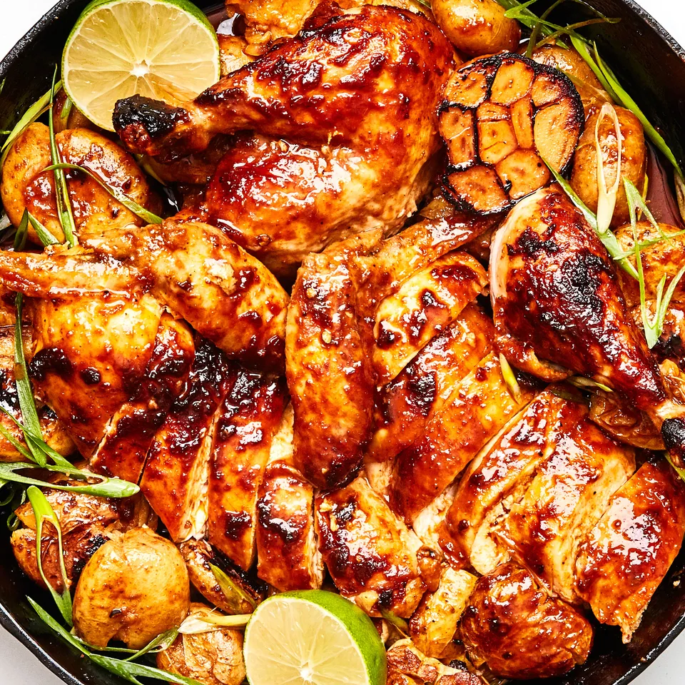

Gochuchang Roast Chicken

Description
This isn’t the crisp-skinned, high-heat roast chicken you’re probably familiar with. Instead, it’s a melt-in-your-mouth tender, schmaltzy, slow-roast version that’s more similar to rotisserie chicken—except (bonus!) it gets slathered in the funky-spicy-sweet gochujang. And while the meat might be the star of the show, don't discount those buttery-soft, nearly-confited potatoes, which cook gently in the chicken fat. Makes you wonder why you haven't always been roasting long-cooking vegetables—carrots, cauliflower, turnips (?!), winter squash, fennel—under the bird for a built-in side, huh?
Ingredients
- 1 3½–4-lb. whole chicken
- 1 Tbsp. Diamond Crystal or 1¾ tsp. Morton kosher salt, plus more
Freshly ground black pepper
- 5 Tbsp. gochujang (Korean hot pepper paste)
- ¼ cup plus 2 Tbsp. extra-virgin olive oil
- 2 heads of garlic
- 1½ piece fresh ginger
- 1½ lb. baby Yukon Gold potatoes (about 1½" in diameter)
- 5 scallions
- 2 limes
- 2 tsp. honey
Steps
- Place a rack in middle of oven; preheat to 300°. This is an important temperature for this recipe, so if you don’t have an oven thermometer already, now is the time to get one! Pat chicken dry with paper towels. Place on a small rimmed baking sheet. Season 1 3½–4-lb. whole chicken all over with 1 Tbsp. Diamond Crystal or 1¾ tsp. Morton kosher salt and lots of freshly ground black pepper, making sure to season the inside cavity.
- Whisk 5 Tbsp. gochujang and ¼ cup extra-virgin olive oil in a medium bowl until combined. Finely grate 3 garlic cloves (from one of the heads of garlic) into gochujang oil. Peel 1 ½" piece fresh ginger (a spoon can get the job done), then grate into gochujang oil; whisk to combine.
- Cut what’s left of the head of garlic in half crosswise. Repeat with second head of garlic. Stuff 2 garlic halves inside cavity of chicken. Tie legs together with kitchen twine.
- Using a pastry brush, brush half of gochujang oil over chicken.
- Toss 1½ lb. baby Yukon Gold potatoes and remaining 2 garlic halves and 2 Tbsp. extra-virgin olive oil in remaining gochujang oil until well coated. Season lightly with salt and pepper and toss again to combine.
- Arrange potatoes in a 12" cast-iron skillet, scooting them toward edges of pan to make space for chicken. Nestle garlic halves (cut sides down) in center of skillet. Place chicken over garlic—as it roasts, it will infuse the fat (and thus, the potatoes) with flavor. If any potatoes have shimmied their way under the chicken, use tongs to arrange them around it (they won’t cook at the same rate if they’re under the chicken).
- Roast chicken and potatoes, turning potatoes once or twice to coat in juices and oil that accumulate in pan, until potatoes are very tender when pressed with the back of a spoon, and chicken skin is deep reddish-golden brown in color, 2½–3 hours. When you wiggle the legs of the chicken, they should feel loose in the joints, meaning the meat is fall-apart tender. Transfer chicken to a cutting board and let rest 10–15 minutes. Don't skip this step: Letting the bird rests helps the juices in the meat to settle (in other words, it makes the meat juicier).
- Meanwhile, use the back of a large spoon or a potato masher to gently smash potatoes in skillet, exposing some of their flesh to juices underneath so they can soak them up.
- Finish the potatoes: Thinly slice 5 scallions on a long diagonal. Cut 2 limes in half. Cut 1 half into wedges and set aside. Stir 2 tsp. honey and juice of remaining lime half into potatoes. Taste potatoes and season with more salt if needed. Scatter sliced scallions over potatoes.
- Carve chicken, then arrange pieces over potatoes and scallions. Serve right out of skillet with remaining lime wedges alongside for squeezing, and squeeze out the sweet, slow-roasted garlic cloves as you wish.